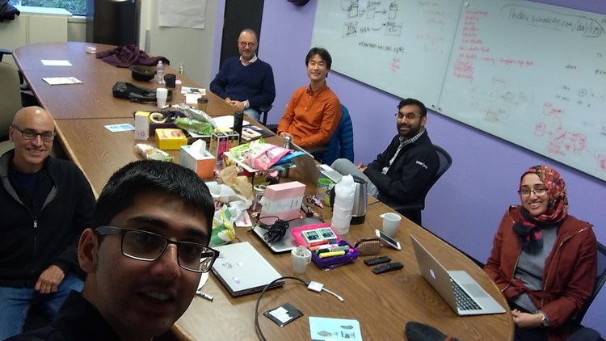
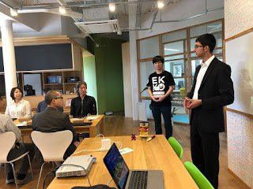
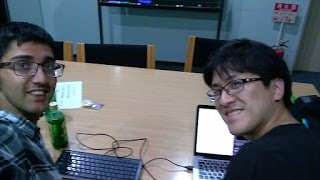

Blog

2019/12/15 ZenIT Workshop @ Tenryuuji - Blog Post
2019-12-22
2019/04/14 ZenIT Workshop @ Eiheiji - Blog Post
2019-04-15
University of Fukui Students Learn About the Silicon Valley and ZenIT
2019-01-25
Successful ZenIT Planning Workshop!
2019-01-15Bring Peace to Your Work - Workshop
2018-11-21
ZenIT Talk @ UC Berkeley
2018-11-09
ZenIT Workshop - For Programmers
2018-10-08
ZenIT - Build Your HTML/JavaScript Website for Beginners
2018-10-05
ZenIT and IoT Programming for Beginners with IchigoSoda
2018-10-01
ZenIT Workshop: AI Government
2018-09-29
ZenIT with IchigoSoda for Beginners
2018-09-22
IchigoJam + Docker/Linux/C Zen/Yoga Programming Workshop
2018-09-06
Zen Programming Workshop - Open Source Greenplum Database
2018-09-03
Zen Programming - Private Class
2018-09-01